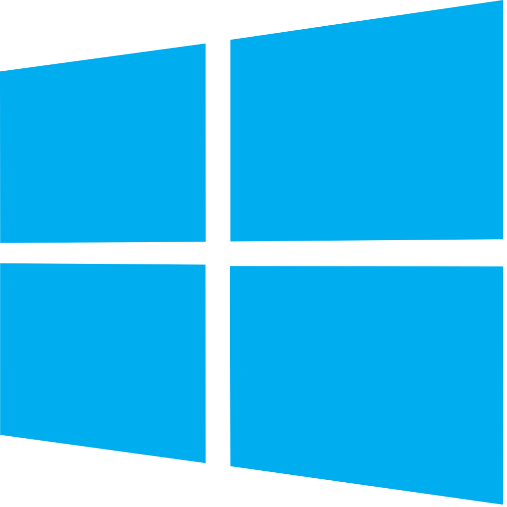
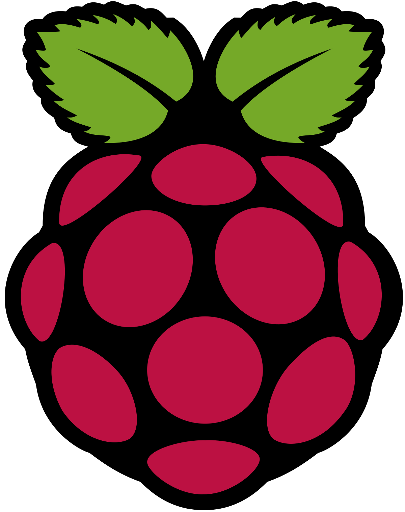
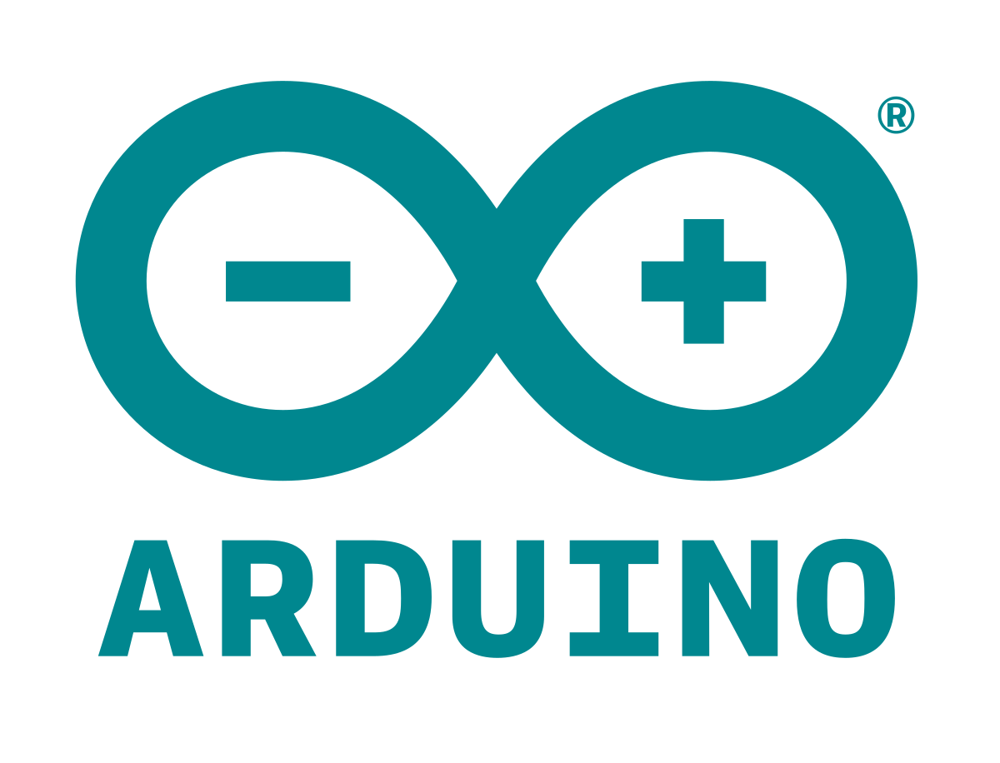
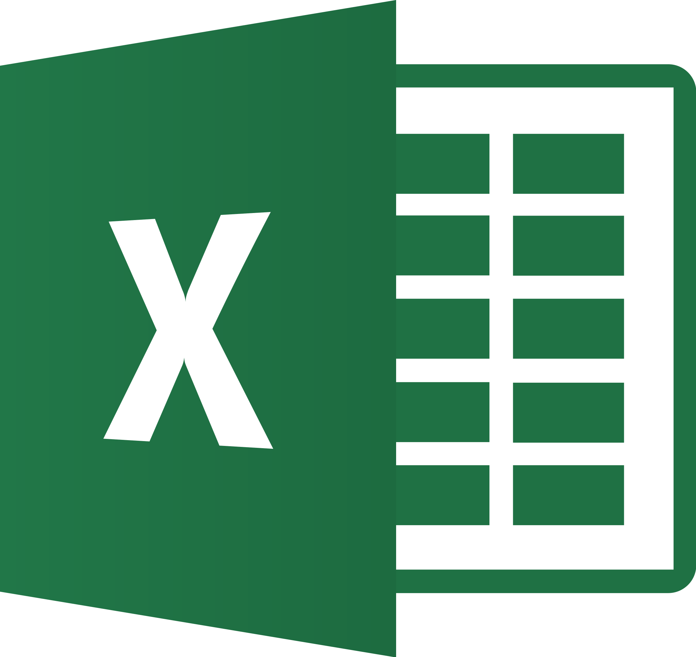
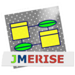
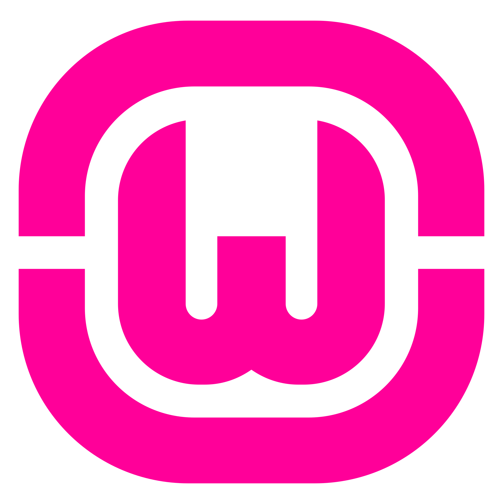
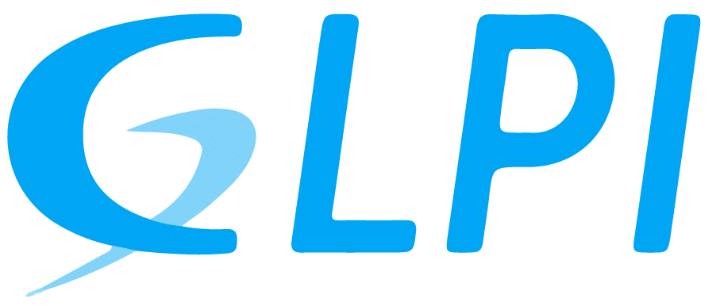
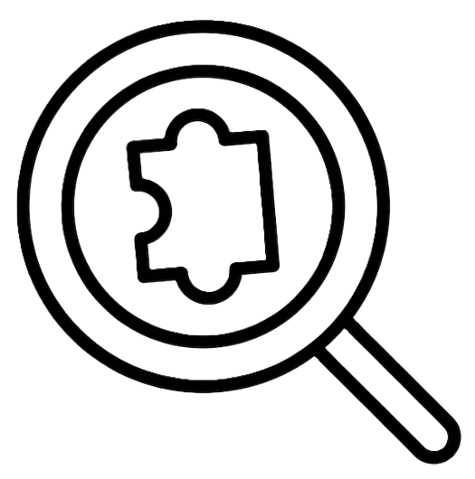
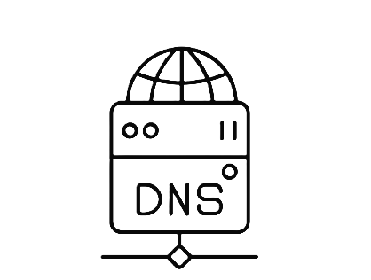
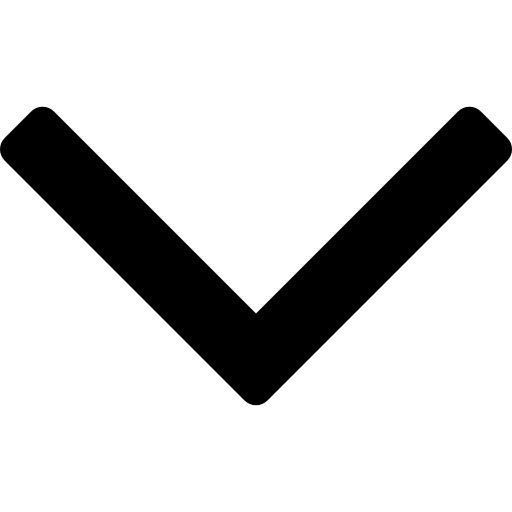

RÉALISATIONS & MISSIONS
Compétences :










Réalisations au sein de mon école :
GLPI
GLPI est un outil open-source conçu pour gérer les infrastructures informatiques et le parc matériel d'une organisation.

SITE RESPONSIVE
Un site pensé pour tous les écrans, c'est plus qu'un simple confort : c'est une nécessité.
RECONSTITUTION D'UN SITE
Reproduire un site complet à partir de captures d'écran, sans autre indication, voilà le défi proposé en début de BTS.
SÉCURISATION D'UN SITE AVEC OWASP
Apprendre à protéger une application web dès ses premières lignes de code, selon les principes de l'OWASP.
TESTS UNITAIRES EN JAVA
Mettre en place des tests unitaires avec JUnit, afin de valider le bon fonctionnement d'une calculatrice codée en Java.

SERVEUR DNS
Déployer un environnement serveur complet via Windows Server 2016 dans une machine virtuelle, avec les rôles AD DS et DNS.

Réalisations au sein de mon entreprise :
GLPI
GLPI est un outil open-source conçu pour gérer les infrastructures informatiques et le parc matériel d'une organisation.
GPO
Une GPO (Group Policy Object) permet aux administrateurs système de déployer et appliquer des stratégies sur les ordinateurs d'un domaine Active Directory.
Réalisations personnelles ou antérieures :
Ici vous pourrez retrouver quelques-unes de mes créations sur Tinkercad !
Testez-les en cliquant sur les liens.

Liens Tinkercad :
1er MINI PROJET :
Grue miniature